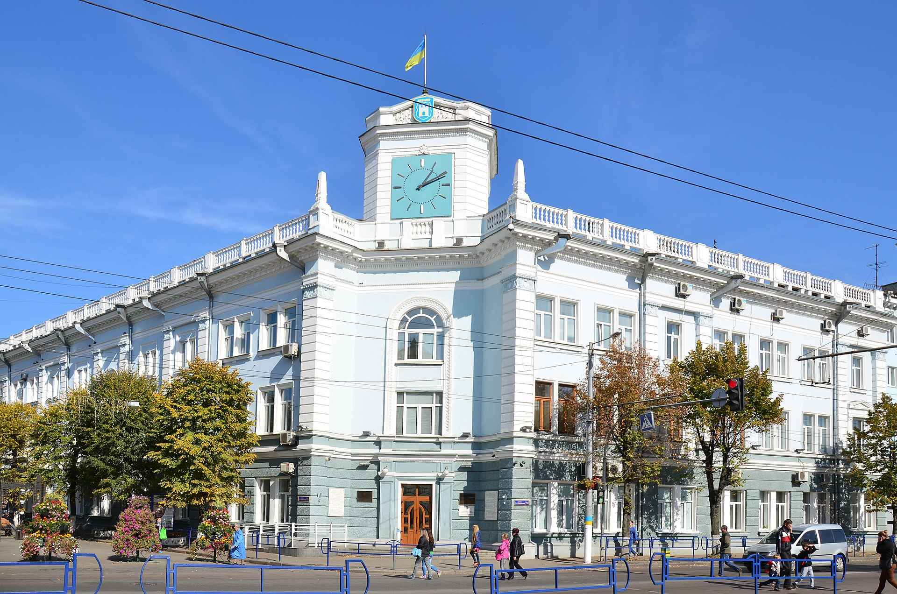

Місце народження: 08 липень 2002 року, м. Запоріжжя
Освіта: Запорізька гімназія №28;
НТУ "КПІ" м.Київ
Хоббі:
Улюблені фільми:
Житомир — місто на півночі України, розташоване на річці Тетерів. Адміністративний центр Житомирської області та Житомирського району, центр Житомирської міської об'єднаної територіальної громади. Населення міста — 261,6 тис. осіб, територія — 6100 га. Місто поділяється на Богунський та Корольовський райони. Головними вулицями є Київська, проспект Незалежності, Велика Бердичівська, Чуднівська, Перемоги. На річці Тетерів розташований Гідропарк. Належить до столичного економічного району. Основними галузями економіки міста є легка, переробна та харчова промисловість. Житомир є культурним та освітнім центром області.
Житомир належить до найдавніших міст України. За місцевою легендою, яку записав історик XIX століття, священник Микола Трипольський, місто започатковано близько 884 року, і свою назву отримало від імені руського дружинника київських князів Аскольда та Діра — Житомира, що нібито відмовився служити Олегу, сховався в лісах і оселився на високій скелі при злитті рік Кам'янки й Тетерева. Згодом над глибоким (близько 30 метрів) урвищем над Кам'янкою збудували дерев'яний замок (зараз на Замковій горі, у цьому місці розташований філіал обласного архіву). Відомий чеський вчений-славіст Павло Йосиф Шафарик доводив, що древнє городище — майбутній Житомир — виникло як центр племені житичів, що входило в племінний союз древлян. Назва міста — мир житичів, як і самого племені, основним заняттям якого було хліборобство, виникла від важливої в цьому краї культури — жита, що культивується тут із незапам'ятних часів. Є свідчення про те, що в давнину навіть у центрі міста сіяли жито, ячмінь. Про місто говорили: «мир і жито», «мир житичів». Можливо також, що Житомир — це скорочена форма від слова «животомир», тобто символ мирного спокійного життя. Відомо також, що чоловіче ім'я Житомир поширене в Хорватії та Сербії. Також назва Житомир, поряд з назвами Київ, Боярка, Радичі зустрічається на території колишньої Югославії.
